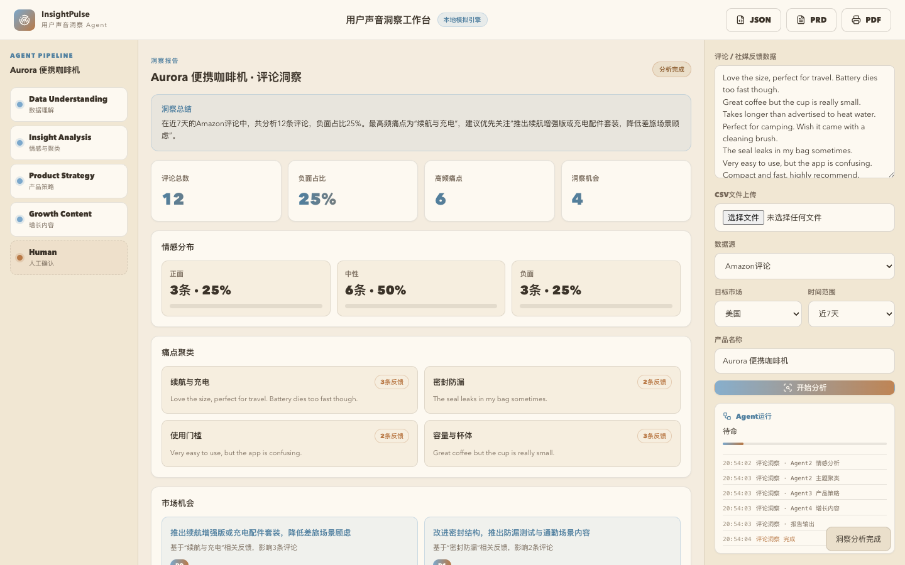

InsightPulse自动分析Amazon、TikTok、Reddit和CSV中的用户声音，输出用户痛点、产品机会、需求优先级和内容增长方向，让每一个产品决策都有数据依据。

评论、社媒留言和客服反馈是最真实的用户信号，但分散的信息很难形成决策。
Amazon、TikTok、Reddit、客服反馈难以统一分析。
5000条评论人工分析需要数天。
不同人判断标准不一致。
只看高频表达，看不到潜在需求。
每个Agent都有明确输入、处理逻辑和输出结果，产品经理始终在环。
支持Amazon、TikTok、Reddit评论与CSV文件上传。
输出情绪比例、趋势变化与代表评论。
按影响人数、情绪强度和商业价值输出P0/P1/P2。
支持JSON、PRD和PDF格式，可直接同步给团队。